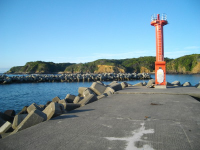
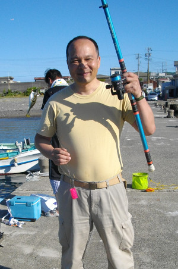

釣行日誌 故郷編
2014/06/08 梅雨晴れの相差漁港に散る
パールロードを鳥羽展望台のあたりまで走ってくると、左側の眼下に熊野灘の海面が光って見える。今日は一泊旅行で鳥羽市の相差（おうさつ）にある民宿に泊まり、明日の朝、漁港でサビキ釣りに挑むのだ。海面の輝きが心の中にまで差し込んで、明日の釣りへの期待が最高潮に高まる。
その夜は民宿で、タイ、ヒラメの刺身、イセエビのグラタン、アワビのワイン蒸しなど、おなか一杯頂いてぐっすりと休んだ。
翌朝、というか夜中の３時に目が覚めて、もう寝付けない。４時になるまで布団の中で寝返りを打ちつつ待ち、携帯のアラームが鳴ると同時に飛び起きる。浴衣から服に着替え、雨具と着替えの入ったデイパックを持ち、釣竿３本とクーラーボックスを持って民宿を出る。玄関を出たところで、けっこう肌寒かったので、合羽を取り出して羽織る。相差漁港までは歩いて10分あまりである。
漁港には、右、左、中央と３本の防波堤が突き出ており、中央の防波堤には漁船がいくつか留まっている。左側の防波堤には突端に赤い灯台があり、一番海側に出ているので潮の動きも良さそうだ。そこで、えっちらおっちらクーラーをさげて歩いてゆく。ところが防波堤の上に乗ってみると、海側はすべてテトラポッドが積み上げられており、サビキ釣りには向いてないことがわかった。だが、テトラの突端には、一人の釣り人が陣取り、沖側に何やら仕掛けを投げ込んでいる。まったく何も釣れないわけではないらしい。

しかたないので最先端の漁港側に竿を出すことにして、荷物を降ろし、商売を始める。釣竿を伸ばし、ラインを通し、サビキの仕掛けを結ぶ。前もってネットで調べてきたので仕掛けは完璧である。（笑） コマセ餌のビニール袋を切り、カゴに餌を詰める。さぁ、準備完了だ。まだ日の出には少し時間があるが、天気は快晴だ。
水面には海草が漂っているので、それに引っかからないようにそろそろと仕掛けを海中に沈め、クィクィとしゃくる。カゴからコマセ餌が広がり、いい感じである。
30分が経過した。何もアタリは無い。あっれぇ～？ 何もいないのかなぁ？ 目を凝らして水中を見ると、水深はそれほど深くない防波堤の内側は、あまり潮の通しが良くないようである。さらに30分が過ぎた。なにもアタリは来ない。思ったよりコマセの消費量が激しいので、一服を兼ねて仕掛けを巻き上げ、先客の釣り人に話を訊くことにした。
「おはようございます。何が釣れるんですか？」
「ああ、おはようございます。私はアオリイカ狙いでね。」
「はぁ、アオリイカですか」
その釣り人は、25cmほどのアジをまるごと付けた仕掛けを遠投して、アオリイカのアタリを待っているらしい。
「ほら、そこ見てごらん。黒いスミの跡がわかるだろう」
確かに、防波堤上に、黒々とイカの吐いた墨のようなシミがある。
「今日は、前日の雨で、塩分濃度が薄まっちゃったかなぁ。アタリが無いよ」
「あそこでサビキ引いてるんですけど、見込み無いですかねぇ？」
「いいや、しっかりコマセを撒いて誘えば、何がしか釣れるでしょう」
などという会話から、元気をもらい、再び竿を握って釣り始める。うーん。アオリイカかぁ。エギングというのはテレビで見たことあるけど、生餌で釣るのは初めて見るなぁ。しかし、アジでもサバでもいいから、何か食いつかないかなぁ....。以前、知多半島の先の篠島で釣った時には、漁港の堤防から、可愛いサイズのサバが入れ食いになったのだが。
辛抱してしゃくっているうちに、海草が潮の流れで一面に打ち寄せられて、どうにも釣りづらくなってきた。ここはひとつ、場所を変えてみるか！ と決心し、中央の突堤に向かうことにする。竿をたたみ、仕掛けを短くして手に持ち、左手にはクーラーを持ってまたスタスタと歩いて移動する。突堤に来ると、先客が一人、延べ竿で岸壁のへちを落とし込みで釣っている。その釣り人のバケツには、ベラみたいな小さな数尾の魚が。
『あ～！ ここなら居るんだ！』
「すみません。ここで釣ってもいいですか？」
「ああ、いいよ！」
俄然やる気が出てきて、慌てながら竿を伸ばし、カゴに撒き餌を詰める。こちらには海草はなく、浅い水底まできれいに見通せる。コマセが広がっていくと、どこから現れたのか、小さなアジらしき魚がサビキに寄って来た。
「あっ！ 居るいる！」
魚影が見えたので、いっそうテンションが上がり、素早くコマセを詰め替えて再び投入する。寄ってくる小魚。しかし、あまりにも魚が小さいので、アジ用のサビキに食いつくには口が小さすぎるようだ。カゴから出たコマセばかりを食べている。うーん。今一魚が小さいかなぁ？と思うがどうしようもない。
述べ竿の釣り人は、投げ竿も取り出して釣り始めた。見ているうちにアタリがあり、遠くからキスを釣り上げた。
「ふーん。キスも投げ釣りで釣れるのかぁ」
しかしこちらはサビキ一本である。ひたすらコマセを詰め、クイクィとしゃくり続ける。すると、プルプルッというアタリとともに、水中で銀鱗が煌めいた。
「やった～！」
大声をあげて喜んだが、上がってきたのはおなかを膨らませた小さなフグであった。そのおなかにハリが掛かっている。スレだ。

まぁ、１尾は１尾。限りなくボウズに近い、朝の釣りが終わった。８時には宿に戻って朝食をいただかなくてはならない。記念に写真を撮ってもらい、道具を片づけた。期待が大きかった分、釣れなかったショックも大きかったが、民宿の美味しい和風バイキングの朝食が徒労の４時間をねぎらってくれた。またいつか、海釣りを楽しもう。
釣行日誌 故郷編 目次へ
サイトマップ
ホームへ
お問い合わせ